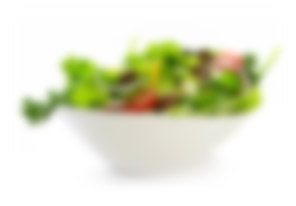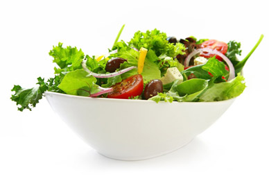
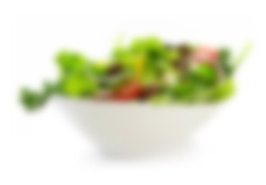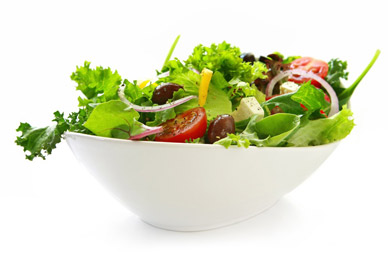
FRESH FEATURES
for starter

 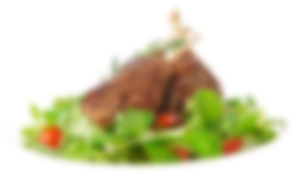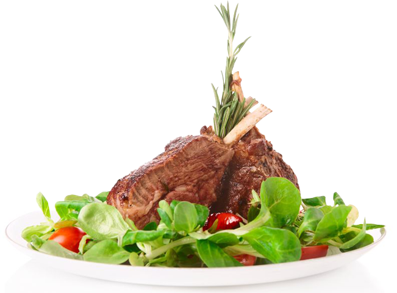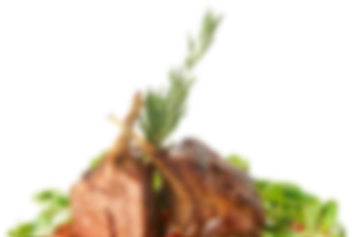
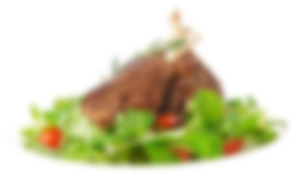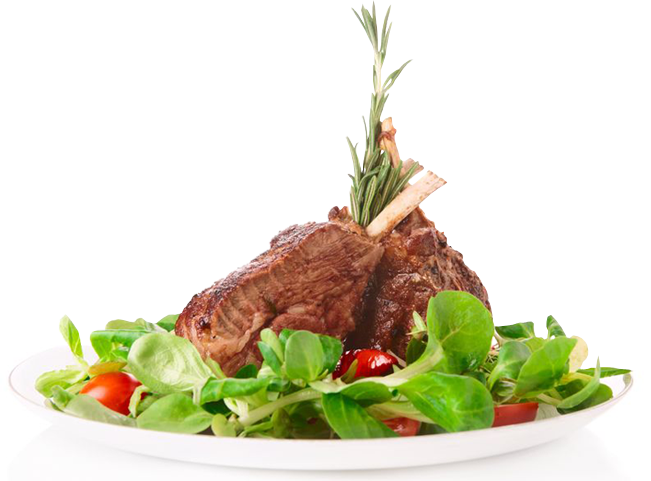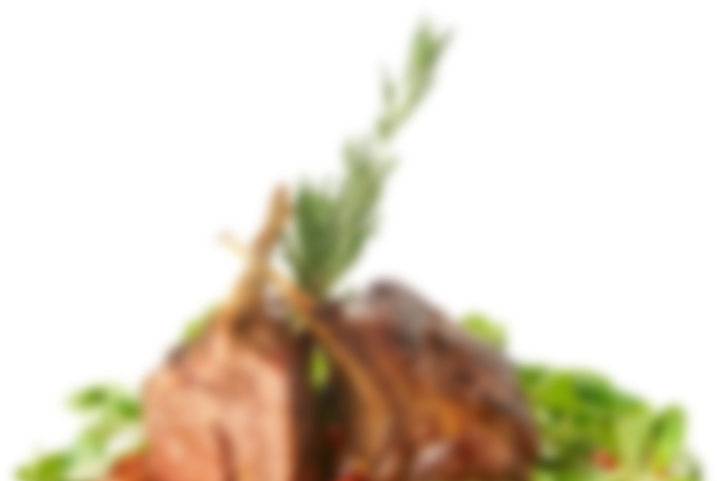
SPICY PARALLAX EFFECT
for main course
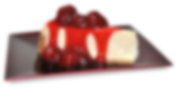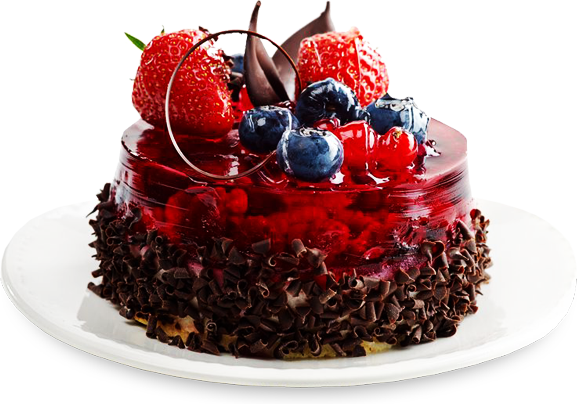
SWEET TRANSITIONS
for dessert
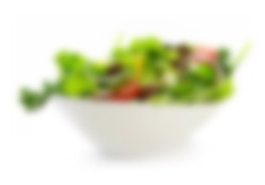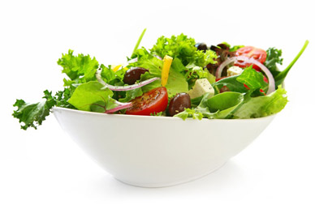
FRESH FEATURES
for starter
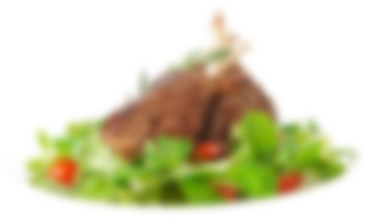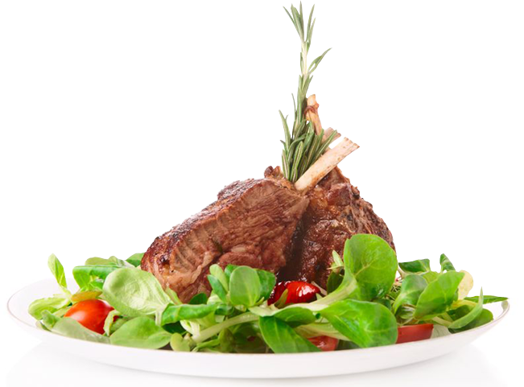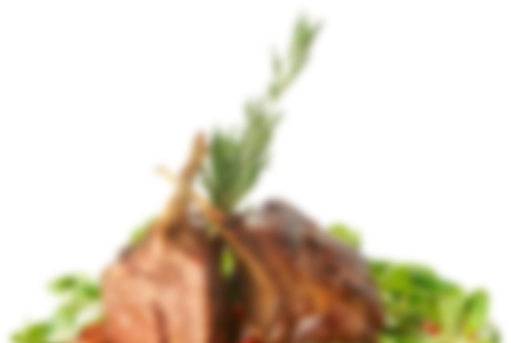
SPICY PARALLAX EFFECT
for main course
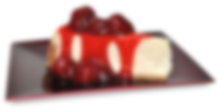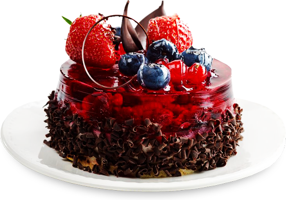
SWEET TRANSITIONS
for dessert
A full width slider with three smart features:
Layers container: the pixel-positioned layers are always inside a centered (invisible) container element
Responsive under: the slider will switch into responsive mode when the browser gets resized under a given value
Parallax layers: Move your mouse over the second slide and and you will see a fancy real-time parallax effect!